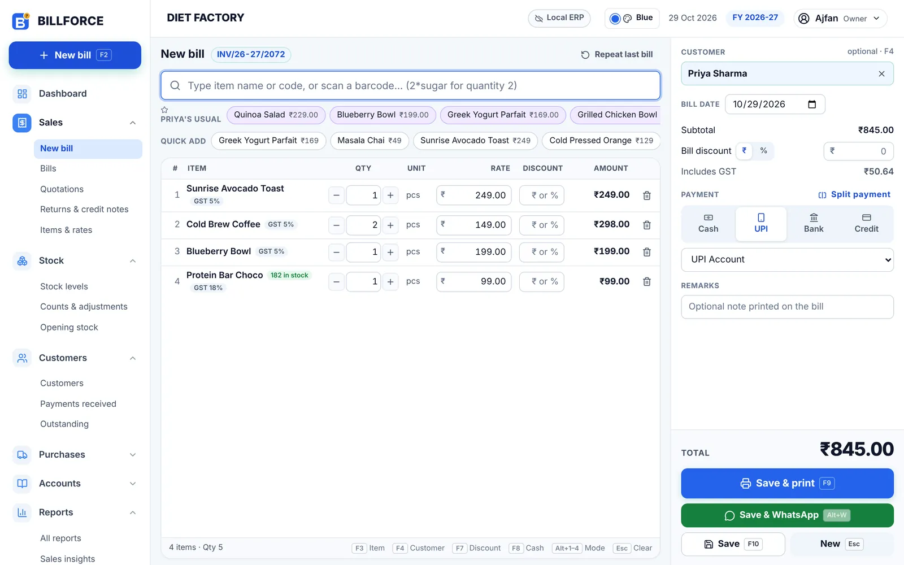
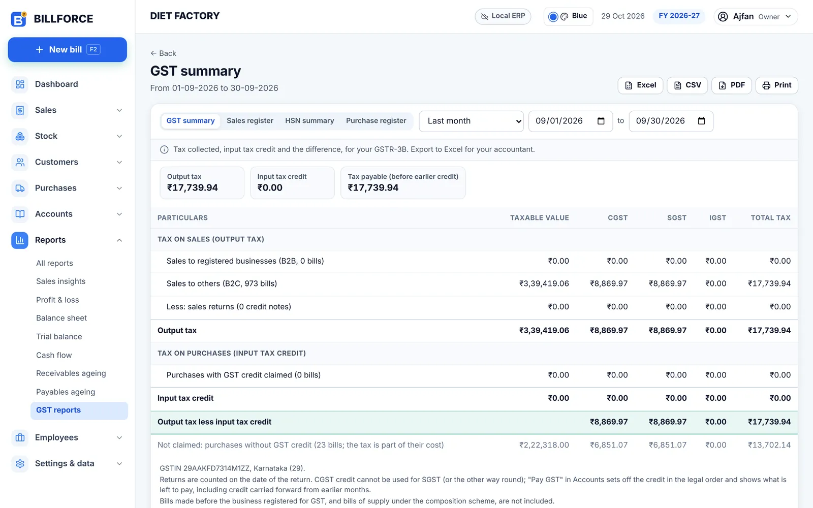

Free GST billing software for Indian shops
BILLFORCE bills with CGST, SGST and IGST, tracks your stock and keeps GST-ready books on your Windows PC. No subscription, no invoice limit.
Version 1.8.1 · Windows 10 or 11 (64-bit) · Billforce-Setup.exe
Already paying for a billing app? See an honest comparison before you switch.
What you get for ₹0
Most billing software is free until it matters: the invoice limit arrives at the end of the month, WhatsApp bills stop on the free plan, or “free” lasts exactly thirty days. BILLFORCE is not that: the Windows app is free to download, install and use for as long as you keep it, with no bill cap, per-user charge or card.
Free here means the whole program: GST billing, stock, purchases, accounts, staff logins, printing, WhatsApp bills and backups are in the same download, because there is no paid tier to hold them back for. It stays that way because BILLFORCE is one Windows app, not a cloud service with a server bill per shop.
In the app you get
- Billing with GST on every line — CGST and SGST inside your state, IGST for a customer in another.
- Purchases with input tax credit, purchase returns and supplier payments.
- Stock with average cost, item ledger and low-stock alerts, or a café menu with recipes and costing.
- Double-entry books kept for you: cash and bank books, expenses, partners' accounts, profit and loss, balance sheet and trial balance.
- Printing to 58 mm or 80 mm thermal printers, a UPI QR code on the receipt, bills on WhatsApp and Excel, CSV or PDF exports.
Every screen, with a screenshot, is on the main BILLFORCE page.
GST, the way a counter actually needs it
Indian billing is not one tax rate: a café sells a 5% takeaway item beside an 18% packaged one, and a wholesaler bills 12% in-state and 18% IGST to another dealer. BILLFORCE puts the rate on the item, not the bill.
- Rate and HSN per item, with the tax table on the receipt grouped by rate, the way a customer and an auditor both read it.
- CGST and SGST split automatically inside your state; enter a GSTIN from another state and the same bill becomes IGST.
- Inclusive or exclusive prices, set per item: retail bills at the MRP, B2B invoices add the tax on top.
- Composition scheme: bills stop showing tax columns while purchases still record the tax you paid.
- Discounts, returns and credit notes reach the accounts as they happen, and bill numbers follow your series, restarting each financial year.

The GST reports your accountant asks for
At month end your accountant wants tax collected, input credit, the bills behind both and the HSN-wise summary. All four come out of the Reports menu, nothing retyped.
- GST summary: output tax split into CGST, SGST and IGST, input credit on purchases, and the net tax payable — the three numbers on your GSTR-3B.
- Sales register: every bill in the period with the customer's GSTIN, taxable value, tax and place of supply, ready to export to Excel.
- Purchase register: the same for purchases, with the credit you can claim from each supplier bill.
- HSN summary and Pay GST: quantity and value by HSN code for the portal, and the challan payment posted to your books.

Free vs paid, compared honestly
Paid tools are not the enemy, and several do things BILLFORCE does not. This is what actually differs for a small shop.
| What matters | BILLFORCE | Typical paid GST app |
|---|---|---|
| Price for one shop | ₹0, with no paid tier | A monthly or yearly subscription |
| Invoice limit | None | Free plans usually cap bills |
| Without internet | Fully offline in the Windows app | Often cloud-first |
| Where the data lives | Your own PC, with backups you control | Usually the vendor's cloud |
| GST reports | Summary, registers, HSN summary, Pay GST | Usually included, some on higher plans |
| Mobile app | No native app; a phone browser at billit.billforce.in | Native Android and iOS on most |
| Support | Email, from the developer | Often a phone line and onboarding |
Worth evaluating alongside BILLFORCE: Vyapar, myBillBook, Zoho Books and, for table service, Petpooja. They are cloud-first, their mobile apps are better than ours, their support comes with a phone number, and Petpooja handles aggregator orders properly. We are not affiliated with any of them. If you bill mostly from a phone or want a support line to call, stay where you are.
Set up in three steps
No server, no Node.js, no installer that asks for an administrator password.
-
Download
Billforce-Setup.exe installs for your Windows user and adds Start menu and desktop shortcuts.
-
Register your business
Choose “Register Business”, create the owner login and keep the recovery code safe. Add your GSTIN and logo.
-
Add your first items
Give each item its rate and HSN code, or import the list from Excel. Press F2, bill, and F9 to save and print.
“Windows protected your PC”? The installer is not code-signed yet. Click More info, then Run anyway.
On a Mac or Linux, or need several counters on the same books? Run the BILLFORCE server edition.
Questions about free GST billing
Is BILLFORCE really free, or is there a paid plan later?
BILLFORCE is free to download and free to use, with no invoice cap, no trial period and no paid tier. There is no subscription, no per-user charge and no card to add.
Does it work without internet?
Yes. Billing, stock, accounts, GST reports, printing and backups all work offline in the Windows app. The internet is needed only to download it, to send a bill on WhatsApp, and if you choose the optional online billing at billit.billforce.in.
Can one bill have different GST rates?
Yes. The rate and HSN code belong to each item, not to the bill. A bill with a 5% item and an 18% item is taxed line by line, and the GST table at the bottom of the receipt is grouped by rate.
Will it file my GST return for me?
No. BILLFORCE prepares the figures your CA needs (GST summary, sales and purchase registers and the HSN summary) but filing on the GST portal is still done by you or your accountant. There is no direct portal integration.
What do I need to run it?
A Windows 10 or Windows 11 PC (64-bit), about 300 MB of disk space and any printer installed in Windows, including a 58 mm or 80 mm thermal receipt printer. No administrator account is needed to install it.
Start billing with GST today.
Free. Works offline. Your data stays on your PC.
Version 1.8.1 · Windows 10 or 11 (64-bit) · Billforce-Setup.exe